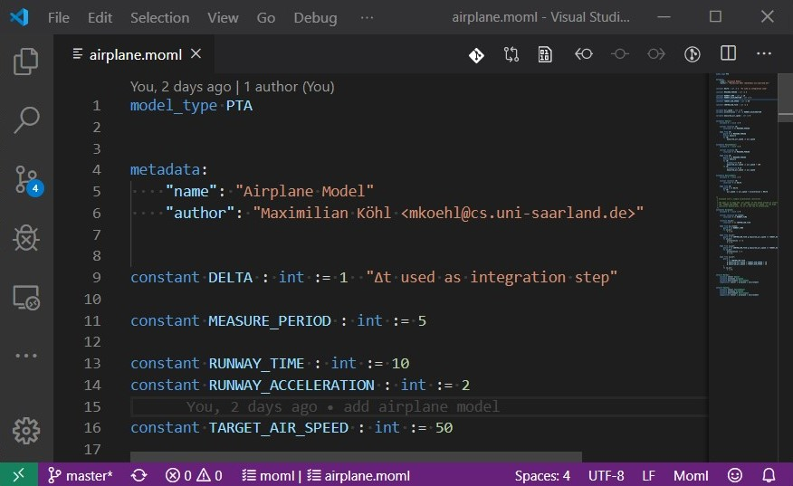

MOML
Contents
MOML¶
The Momba Modeling Language (MOML) is a model description language based on the JANI-model specification. In comparison to JANI, MOML is less verbose and thus easier to read and write. However, MOML is still a low-level language forcing you to specify your model explicitly. Depending on your use-case such fine grained control over the constructed model might not be necessary and you may want to consider using a higher-level language like Modest. If you, however, want explicit control over every aspect of your model, give MOML a try.
Momba comes with a converter to convert between MOML and JANI. Hence, you can use your MOML model with any tool supporting the JANI specification.
model_type DTMC
metadata:
"name": "Simple Die"
variable side : int[1,6] := 1 "side of a die"
automaton Die:
initial location l
edge from l:
to l:
probability 1 / 6
side := 1
to l:
probability 1 / 6
side := 2
to l:
probability 1 / 6
side := 3
to l:
probability 1 / 6
side := 4
to l:
probability 1 / 6
side := 5
to l:
probability 1 / 6
side := 6
network:
instance die Die
composition die
VS Code Support¶
We provide a VS Code extension for MOML:
